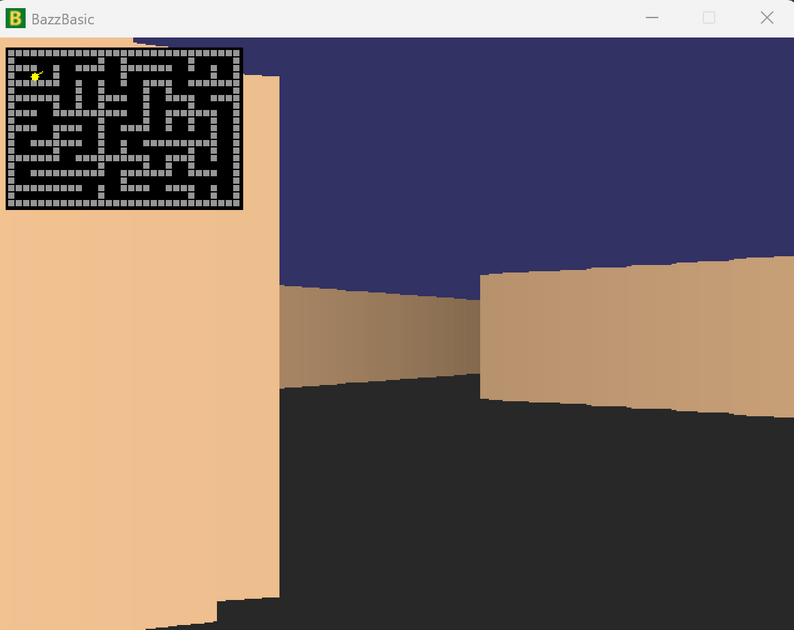
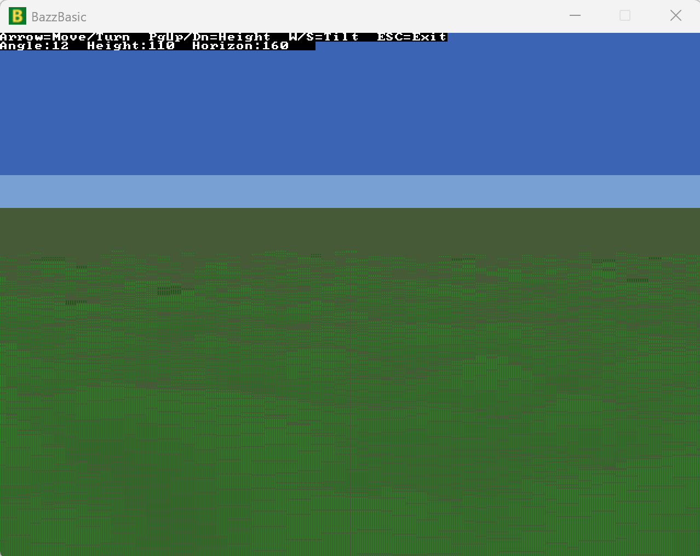
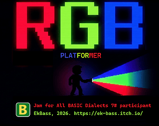
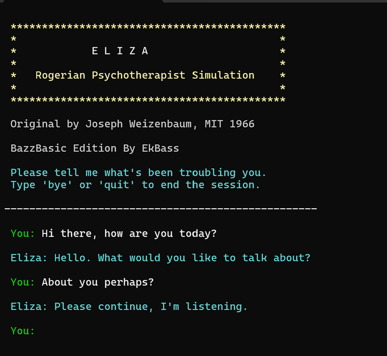
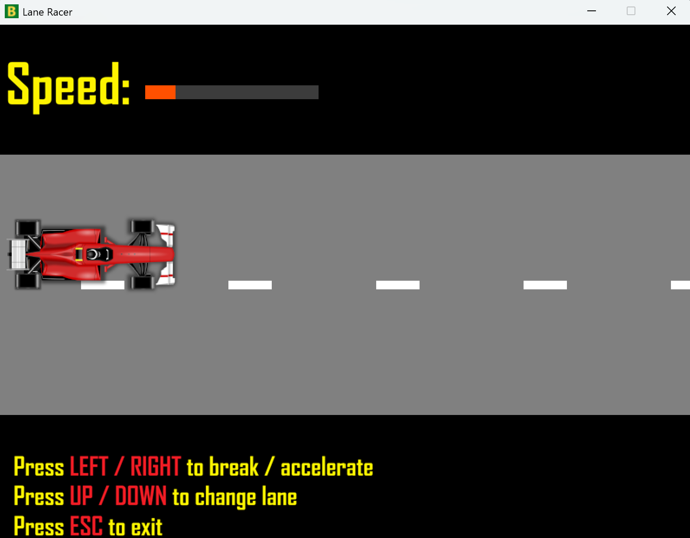
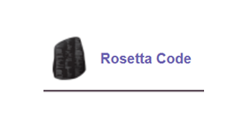
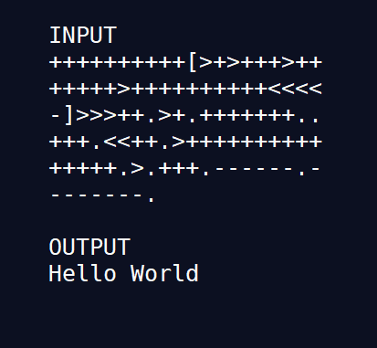
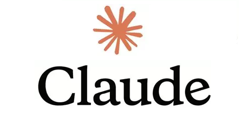

Gallery
A selection of programs from the BazzBasic Examples collection. All source code is available on GitHub.

Raycaster_3d_optimized.bas
A smooth first-person raycaster engine written entirely in BazzBasic. Minimap, depth shading and real-time movement — proves that BazzBasic can handle serious graphics work.
View source ↗
Voxel_terrain.bas
A Comanche-style heightmap renderer with procedurally generated terrain. Eight smoothing passes turn random noise into hills, valleys, water, beaches, forests, rock, and snow — each assigned a color by height band.
View source ↗AI Guide
The BazzBasic AI Guide is a powerful guide produced and approved by Claude.ai, ChatGPT and Mistral Le Chat, specifically designed to be interpreted by AI. Upload it to your AI's prompt or project file and it will instantly become a BazzBasic expert.
View dataset ↗
RGB Vision
A speedrun platformer (win x64) made for Jam for All BASIC Dialects #7 (itch.io).
Download from itch.io ↗
ELIZA - BazzBasic Edition
A classic DOCTOR script from the 60s which made people honestly believe they are talking to a real human. Grandmother of modern AIs.
Download from itch.io ↗
lane_racer.bas
Showcase for how to start building a lane racer game. Even with tons of comments, way under 200 lines total.
View source ↗
RosettaCode.org
Over 100 (and counting) quality tasks solved at RosettaCode.org. All solutions in Examples/rosetta-code folder.
BazzBasic at rosettacode.org ↗
BrainFuck.bas
Oh yes, we have that too. One of the first programs ever done with BazzBasic.
View source ↗
Anthropic_Claude_API_call.bas
Less than 40 lines of code and one of the most powerful AIs is at your disposal via BazzBasic. And yes, if you're an OpenAI fan, you'll find sample code for that too.
View source ↗